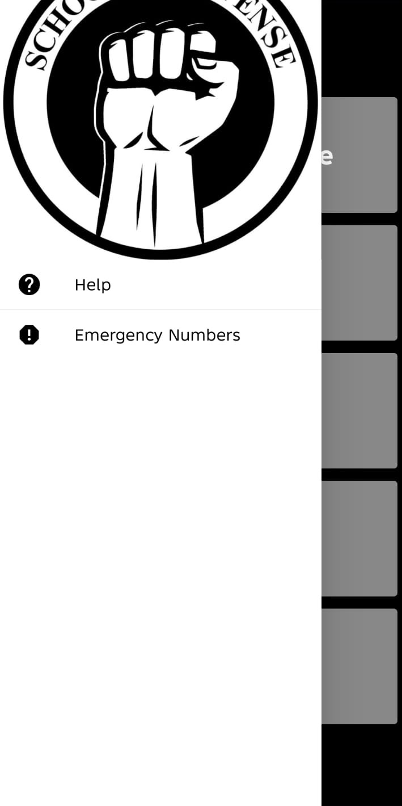

Self Defense App
A personal safety app built to put essential self-defense information one tap away — designed for a moment when a reader is stressed, in a hurry, or both, so the interface has to get out of the way and let the content do the work.


Design goals
The app is built around a simple idea: in a stressful situation, nobody wants to hunt through menus. So the interface favors a handful of oversized, high-contrast buttons over dense navigation, keeps text short, and surfaces the two things most likely to matter in an emergency — Help and Emergency Numbers — in a drawer that's always one swipe away, no matter which section a reader is currently in.
What's inside
- Types of self defense — an overview of defensive approaches and techniques.
- Women courses — courses aimed specifically at women's self-defense training.
- Defense gear — guidance on personal safety equipment.
- Cyber bullying — information and resources for a form of safety threat that isn't physical.
- Motivation — encouragement to keep learning and stay prepared.
How it's built
The app was built in MIT App Inventor, a block-based platform for Android app development. That constraint shaped the design as much as it shaped the build process: with a simpler component model than a full native toolkit, the priority became a clear information hierarchy and a navigation pattern (menu + persistent drawer) that stays easy to follow even with limited custom UI plumbing.